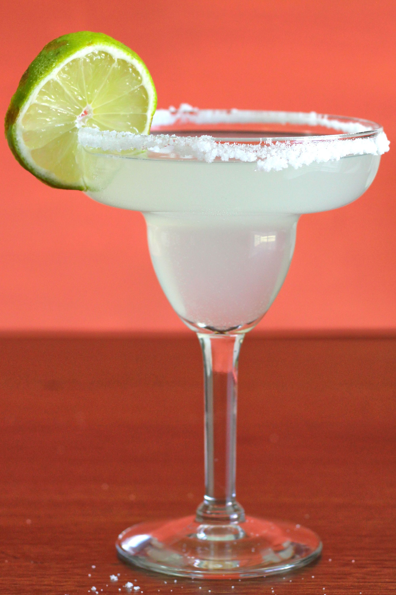
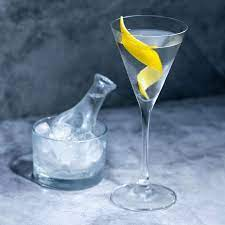

Odin Recipes
Classic Margarita
Description
A margarita is a classic cocktail that typically consists of tequila,
lime juice, and triple sec, a type of orange liqueur.
It is usually served in a salt-rimmed glass and can be served on the rocks (with ice)
or blended with ice to create a frozen margarita.
Some variations of the margarita may include additional flavors,
such as strawberry or mango, and different types of tequila or citrus fruits.
It is a popular drink in bars and restaurants, especially in Mexico and the United States.
Ingredients
- 2 ounces tequila
- 1 ounce lime juice
- 1 ounce triple sec
How to:
- Rim the glass:
Take a lime wedge and run it around the rim of the glass.
Pour some salt onto a plate and dip the rim of the glass into the salt,
twisting it to make sure the entire rim is coated in salt.
- Fill shaker with ice:
Fill a cocktail shaker with ice, enough to fill the glass you're using.
- Add ingredients:
1 oz of triple sec into the shaker
- Shake well:
Secure the lid on the cocktail shaker and shake it vigorously for about 15 seconds
to mix the ingredients and chill the cocktail.
- Strain into the glass:
Using a cocktail strainer, strain the margarita into the salt-rimmed glass.
- Garnish and serve:
Cut a small slit into a lime wedge and slide it onto the rim of the glass.
Serve immediately and enjoy your classic margarita!
Classic Martini
Description
A martini is a classic cocktail made with gin and dry vermouth,
typically served in a chilled martini glass and garnished with a lemon twist or olive.
Ingredients
- 2 1/2 oz gin
- 1/2 oz dry vermouth
How to:
- Chill the glass:
Place a martini glass in the freezer or refrigerator to chill
while you prepare the cocktail.
- Fill a mixing glass or cocktail shaker with ice,
enough to cover the liquid ingredients.
- Add the gin and vermouth:
Pour 2 1/2 oz of gin and 1/2 oz of dry vermouth into the mixing glass.
- Stir:
Using a bar spoon, stir the ingredients together
in the mixing glass for about 30 seconds, until well chilled.
- Strain into the glass:
Place a cocktail strainer over the mixing glass and strain the martini
into the chilled martini glass.
- Garnish and serve:
Cut a small twist of lemon peel or place an olive on a toothpick,
and add it to the martini for garnish. Serve the martini immediately and enjoy!
Classic Margarita

Description
An Old Fashioned is a classic cocktail that dates back to the 1800s.
It is typically made with whiskey, sugar, bitters, and water or club soda,
and is garnished with a citrus peel and a cherry.
Ingredients
- 2 oz whiskey (usually bourbon or rye)
- 1 sugar cube or 1/2 oz simple syrup
- 2 dashes of Angostura bitters
- Club soda or water
- Orange or lemon peel
- Maraschino cherry (optional)
How to:
- Muddle the sugar and bitters:
Place a sugar cube or 1/2 oz of simple syrup
in the bottom of an Old Fashioned glass, and add
2 dashes of Angostura bitters.
Use a muddler to mash the sugar and bitters together until they form a paste.
- Add the whiskey:
Pour 2 oz of whiskey into the glass and stir to combine
with the sugar and bitters.
- Add ice:
Fill the glass with ice cubes or one large ice cube.
- Add water or club soda:
Top the glass with a splash of water or club soda,
depending on your preference.
- Garnish:
Use a peeler or knife to cut a strip of orange or lemon peel,
twist it over the glass to release its oils, and place it in the drink.
Optionally, add a maraschino cherry to the glass for a pop of color and sweetness.
- Serve:
Serve the Old Fashioned immediately and enjoy!